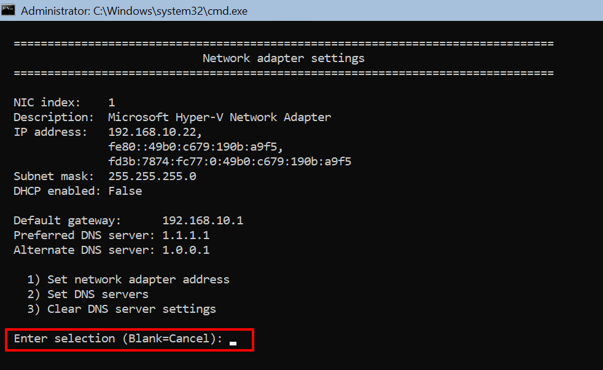
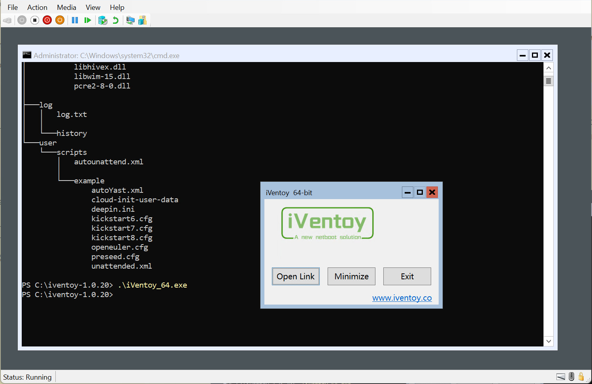

Windows Server 2022 Standard
Start
Installera i VM. Lösenord ombeds bytas vid första inloggningen och därefter startar Sconfig:

Välj genom att skriva in en siffra och tryck Enter. För att exempelvis ändra nätverksinställningar så väljer man siffran 8:

Man guidas genom processen för konfigurationen.
I första menyfönstret väljer man 15 för att komma till Powershell. För att komma tillbaka till menyfönstret mata in sconfig och tryck Enter.
tips
Med Ctrl + Alt + Shift + ? så visas en lista över kortkommandon.
Stäng av brandväggen
För att se status på brandväggen mata in:
Get-NetFirewallProfile | Format-Table
Stäng av brandväggen med:
Set-NetFirewallProfile -Profile Domain, Public, Private -Enabled False
ISO
Ladda ner iVentoy https://github.com/ventoy/PXE/releases på en extern enhet och packa upp filen. Skapa en ISO med Imgburn och lägg till iVentoy, OS-ISO och eventuell skriptfil.

Montera ISO:n i VM:et. Lista enheter med Get-Volume.

ISO:n är monterad på enhet D. Mata in cd d: och sen ls för att se filerna på D. Flytta iVentoy-mappen till enhet C med:
cp .\iventoy-1.0.20\ c: -recurse
och eventuell skriptfil med:
cp .\autounattend.xml c:\iventoy-1.0.20\user\scripts\
Länka Windows.iso-filen symboliskt:
New-Item -Path C:\iventoy-1.0.20\iso\Windows.iso -ItemType SymbolicLink -Value D:\Windows.iso
Installera iVentoy
För att iVentoy skall kunna köras måste Microsoft Visual C++ Redistributable laddas ner och installeras.
För att ladda ner mata in:
wget "https://aka.ms/vs/17/release/vc_redist.x64.exe" -OutFile "C:\vc_redist.x64.exe"
Gå till C:\ med cd c: och installera med:
.\vc_redist.x64.exe
Ta bort filen med rm .\vc_redist.x64.exe -force. Gå in i iVentoy-mappen med cd .\iventoy-1.0.20\. Mata in tree /f för att se strukturen i mappen. För att starta iVentoy mata in .\iVentoy_64.exe.

Ett litet fönster dyker upp som kan gömma sig bakom terminalfönstret. Klicka på Exit knappen när iVentoy skall avslutas.
Öppna en webbläsare på en extern enhet och skriv in adressen till datorn iVentoy är installerad på och ange port 26000. Exempelvis så här: http://192.168.10.22:26000 Klicka för snabbguide.